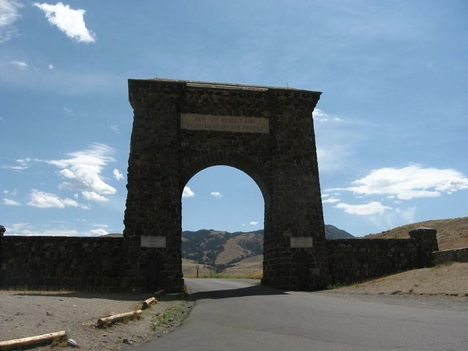
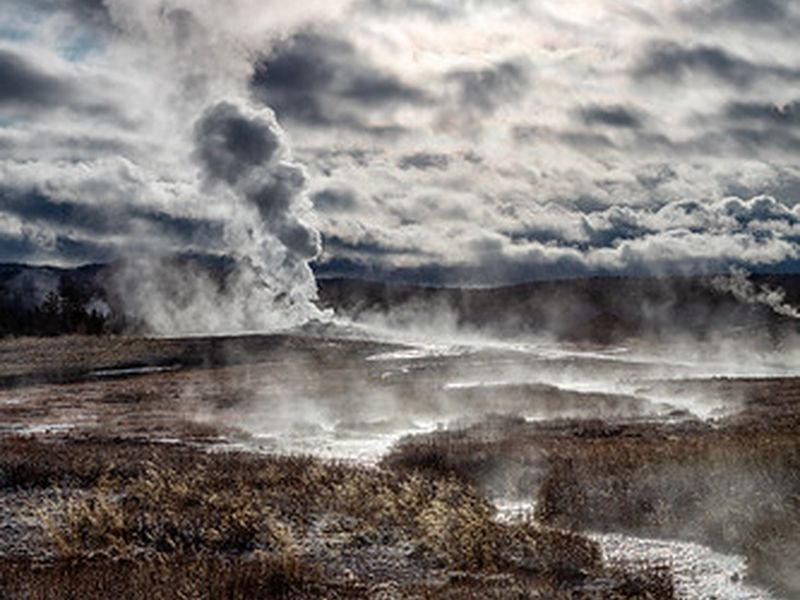
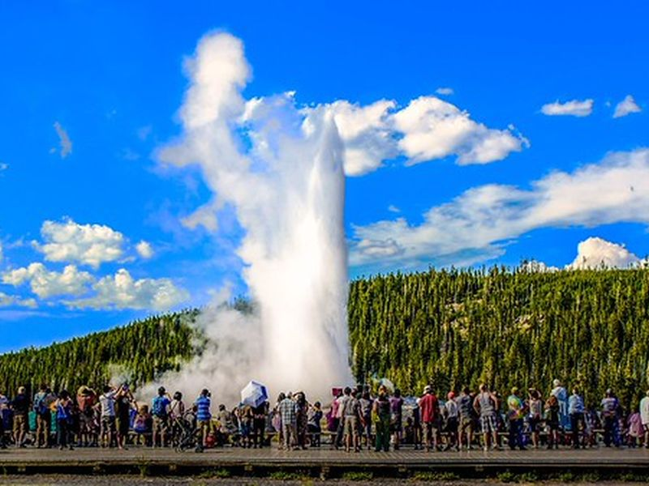
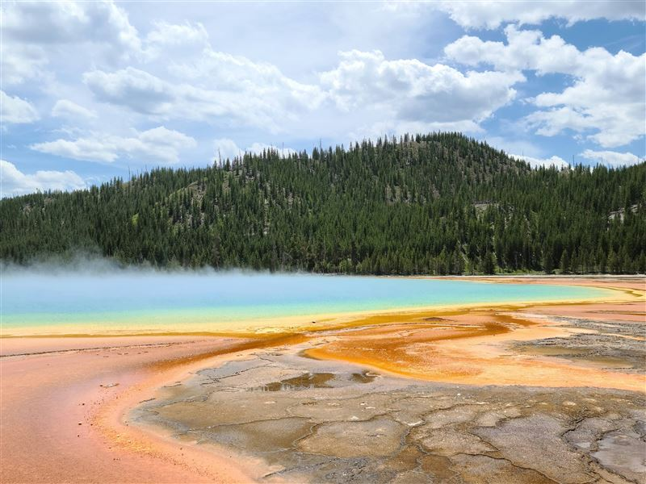
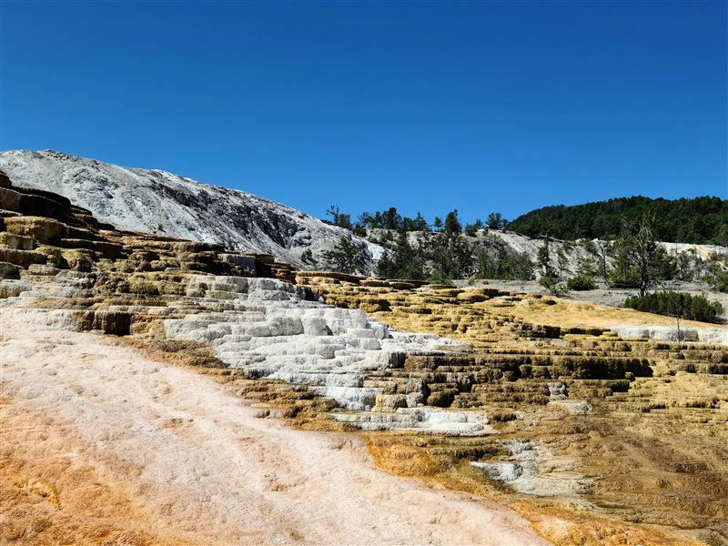
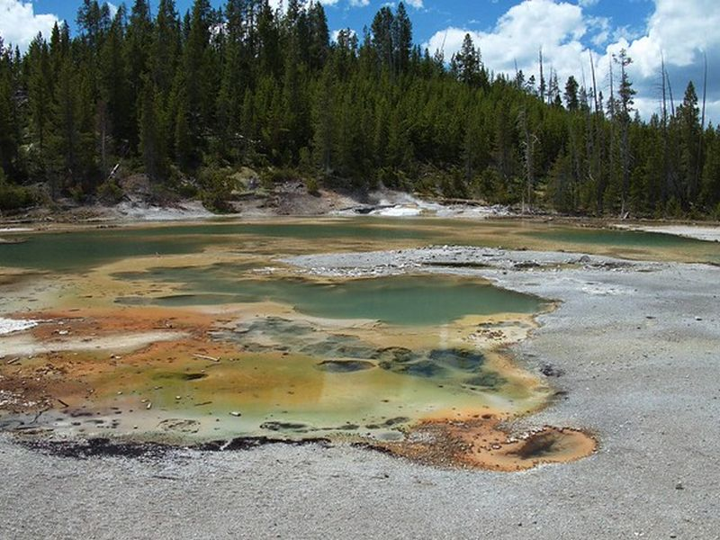
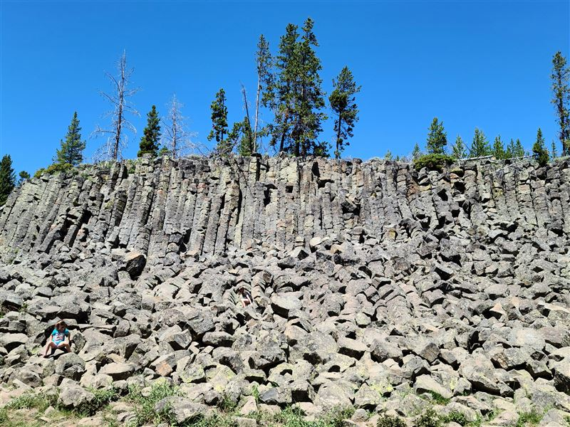
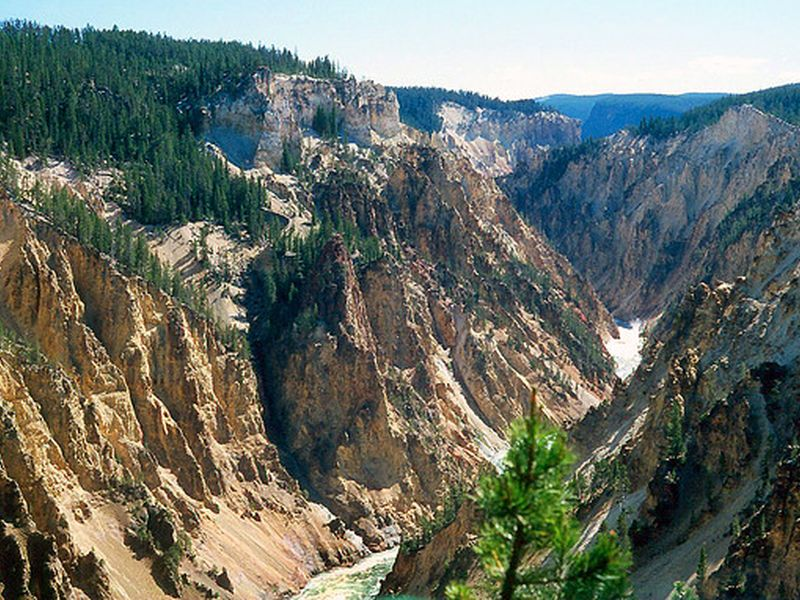

Explore Yellowstone National Park, WY
A Brief History
Yellowstone became the world's first national park in 1872 on a volcanic plateau spanning northwestern Wyoming and parts of Montana and Idaho. Its geysers, hot springs, canyons, and wildlife reflect ongoing geothermal activity beneath the Rocky Mountains, studied by expeditions long before park designation. Army administration and later National Park Service management balanced conservation with rising visitation. Indigenous peoples including Shoshone and Crow hunted and traveled these highlands for centuries.
Attractions Map
Top Sights & Activities

Roosevelt Arch
The Roosevelt Arch marks the north entrance at Gardiner and was dedicated in 1903 by President Theodore Roosevelt. Its inscribed gateway frames the road into the park and recalls early federal efforts to protect Yellowstone's geothermal and wildlife resources for public use.

Old Faithful
Old Faithful is a cone geyser in the Upper Geyser Basin that erupts on a relatively regular schedule. A boardwalk and viewing area surround the vent within Yellowstone National Park, where rangers interpret the basin's geothermal activity and visitor safety along connected thermal features.

Old Faithful Inn
Old Faithful Inn opened in 1904 beside the geyser and is one of the largest log structures in the United States. Its lobby, balconies, and stone fireplace reflect park-era railway tourism. Visitors may enter the public interior spaces when the hotel is open during the operating season.

Grand Prismatic Spring
Grand Prismatic Spring is the largest hot spring in the United States and displays rings of color from heat-loving microbes around a deep blue center. A boardwalk and overlook trail in Midway Geyser Basin provide views of the spring and nearby Excelsior Geyser within the park's thermal landscape.

Mammoth Hot Springs
Mammoth Hot Springs forms terraced travertine deposits on a hillside near the park's north entrance. Boardwalks pass active and dormant thermal features above Fort Yellowstone, where early park administration developed. The Albright Visitor Center interprets the area nearby.

Norris Geyser Basin
Norris Geyser Basin is the hottest and most changeable thermal area in Yellowstone. Trails through Porcelain and Back Basins pass geysers, fumaroles, and colorful mineral pools. The basin lies near the park's geographic center and illustrates how underground heat reshapes surface features over time.

Sheepeater Cliffs
Sheepeater Cliffs are columnar basalt outcrops along the Gardner River near Mammoth. The formation results from cooling lava and is named for the Sheepeater Shoshone who used the area. A roadside pullout and short walk provide views of the cliffs and river canyon within the park.

Grand Canyon of the Yellowstone
The Grand Canyon of the Yellowstone cuts through volcanic rock between Canyon Village and Tower-Roosevelt. Artist Point and other overlooks frame the Lower Falls dropping into a yellow-stained gorge shaped by erosion and hydrothermal alteration. Trails along the rim connect multiple viewpoints.